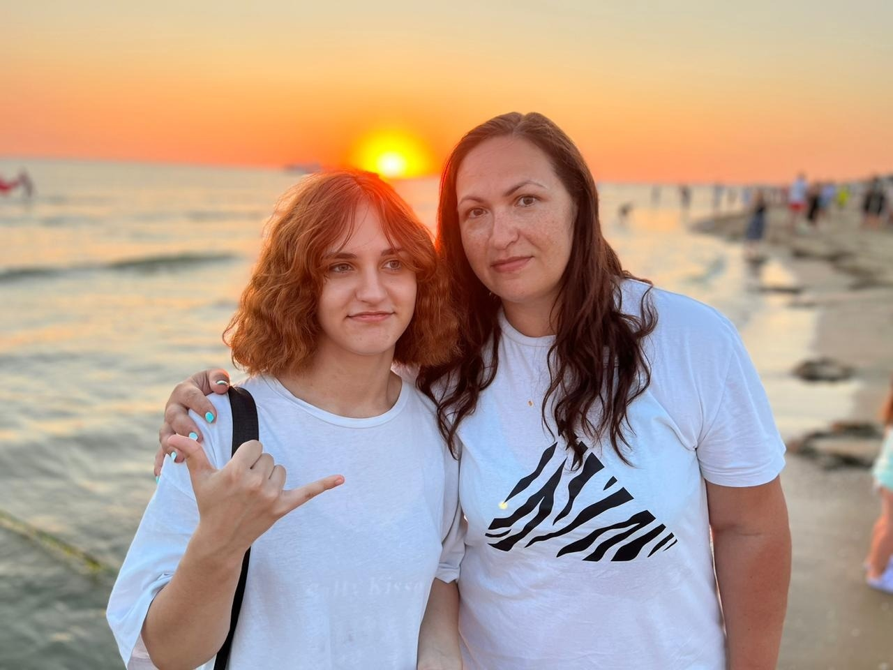

До курса было 18 учеников, и средний доход составлял 70 тысяч рублей в месяц. Во время пандемии в 2020 году я решила заняться репетиторством, начиная с нуля. Было нелегко находить клиентов, приходилось использовать агрегаторы, размещать объявления и ездить по всему городу.
На 22 уроке курса уже есть рост - доход 120 тысяч в месяц, подняла чек, клиенты более интересные.
Интервью с нашей ученицей Анной Губаревой, репетитором по английскому языку из Тулы.
Мы взяли у нее короткое интервью:
— Ань, поделишься, что было до курса, какой средний доход был в месяц? Сколько клиентов?
— До курса было 18 клиентов, средний доход 70 тыс.
— Это в период захода на курс? А в среднем всегда так было?
— Да, это на начало курса. Начала я этим делом всерьез заниматься во время пандемии в 2020м, с нуля буквально.
— Как было дело с клиентами, как тебе приходилось их искать? Тяжелым ли был этот поиск
— Да, довольно сложно, т.к. меня никто не знал, постоянно дежурила на агрегаторах, откликалась на заказы, давала объявления, бралась за любого ученика, ездила по разным концам города в любую погоду.
— Я думаю, любому репетитору это знакомо.
— Какие сложности были во время обучения на нашем курсе? Насколько сложно было учиться? На каком уроке остановилась?
— Особых сложностей не было, все делаю по шагам, читаю и перечитываю, пробую и получается, это кайф. Бывают инструкции такие, что без бутылки не разберешься и выходит хрень в итоге, но у вас все четенько) Мой внутренний гуманитарий доволен.

Я сейчас на 22м уроке, осваиваю основные моменты с рекламным кабинетом.
— Как тебе работа с куратором, что в ней полезно, мотивирует это тебя? Как считаешь, без куратора получилось бы так же?
— Мне комфортно работать с Анастасией, она давала дельные советы и подбадривала, это важно! Без куратора я бы наверное буксовала, дольше проходила курс. Всем, кто не на 100% уверен в своих силах на старте, обязателен куратор, я считаю)
— Какие сейчас действия делаешь для привлечения клиентов? Как часто пишешь посты? Запускаешь ли рекламу?
— Сейчас стараюсь писать ну хотя бы раз в неделю, запускать рекламу в ВК буду буквально на днях, а пока выкладываю посты и видео своих вебинаров по методике преподавания, это некая репутационная составляющая) Работа на будущее.
— А можешь поделиться, как изменилась жизнь, когда увеличился доход? Может что-то купила себе? Съездила в путешествие? Что-то смогла сделать, чего раньше не могла позволить себе)
— Скажу так, раньше были мечты, а теперь планы: скоро буду делать ремонт в детской и покупать технику в студию. Летом будет путешествие, в каникулы!
— Уже есть решение куда поедешь и как надолго на каникулы? Раньше как часто позволяла себе такие каникулы?
— Я хочу попутешествовать по северо-западной части России: Питер и Великий Новгород, город Достоевского)) А может еще и на море махну на недельку.
Остальное время кайфовать на даче: грибы, лес, шашлыки, бадминтон. Месяца полтора отдыха я легко себе позволю.
С 2019 по 2022 год я вообще не могла поехать никуда не влезая в долги при этом( А сейчас на все хватит)
— Все, остался только вопрос, сколько сейчас зарабатываешь? Сколько в среднем в месяц? Сколько клиентов? А вот примерно сколько за год было прошедший заработано?
— В среднем выходит 120 тысяч в месяц. Это январь 2024. Клиентов ненамного больше пока, но сменился состав на более лояльный и интересный мне. Сделала огромный шаг – подняла чек!
За 2023 год я заработала около 815 000 рублей. В этом году прогнозирую рост на 30-50%.
— Очень-очень рада за тебя! Желаем тебе как минимум троекратного роста в этом году!
— Я буду над этим работать! Спасибо! Через год я уверена, многое изменится)